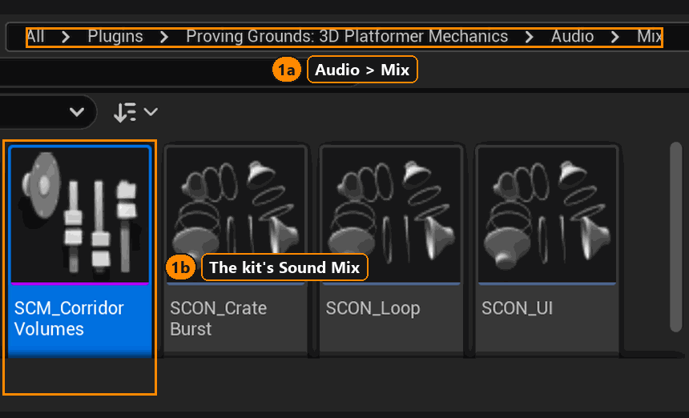
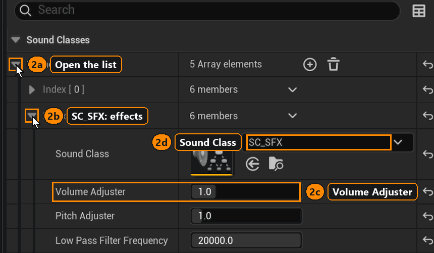
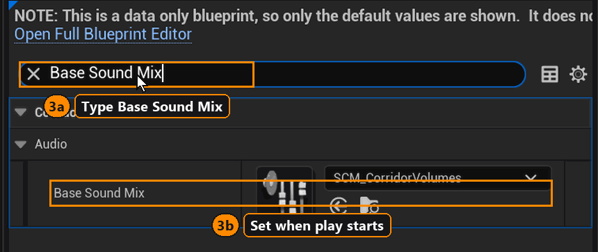
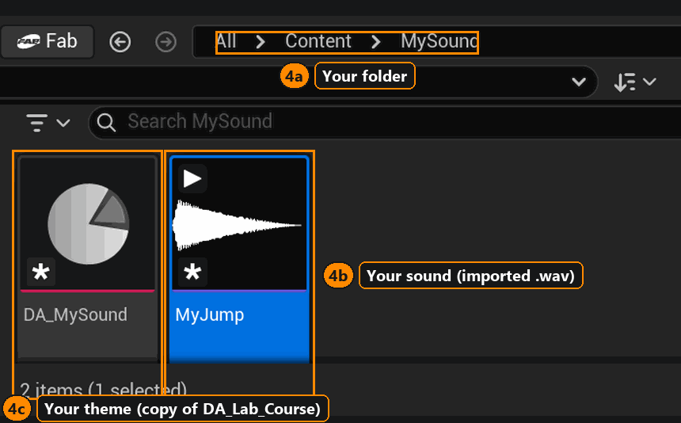
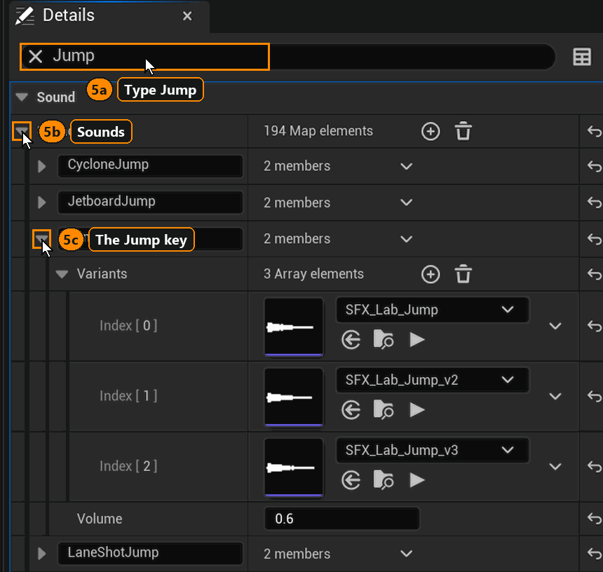
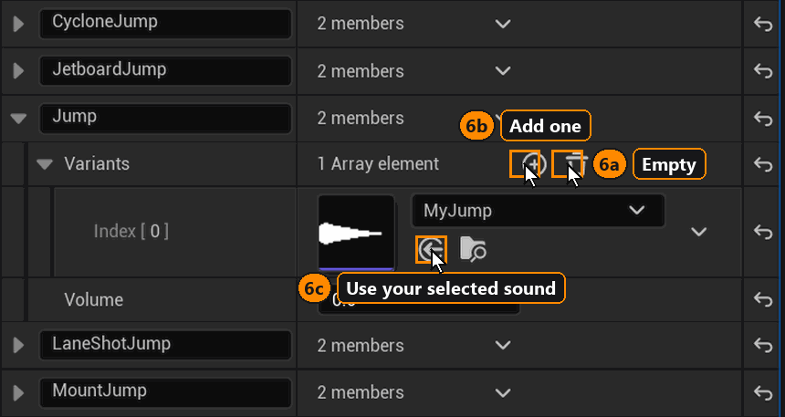
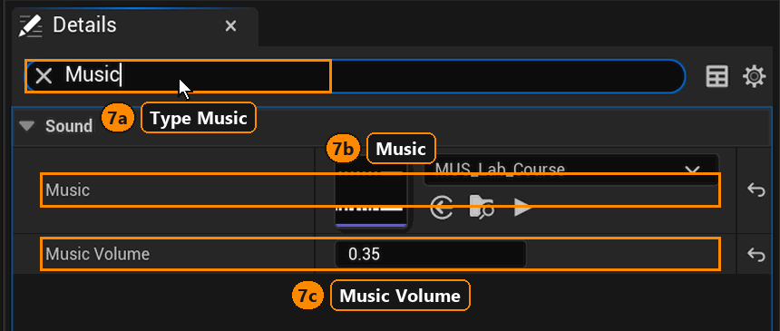
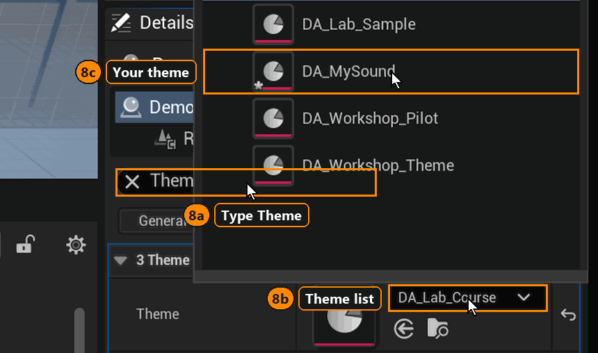
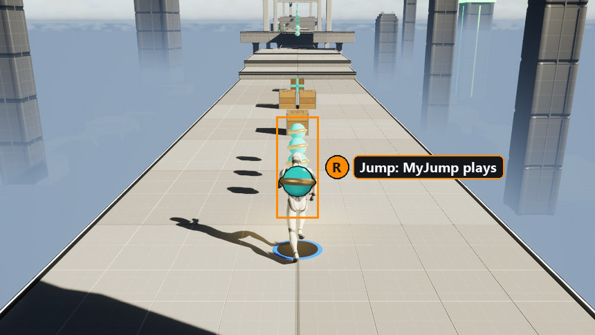

14. Sound and music
Goal: turn a whole group of sounds up or down in one place, and give a game event (here the jump) and the level your own sound and music.
You need: Unreal Engine 5.3–5.8 with the plugin enabled (pictures: 5.7), Settings > Plugin Content ticked in the Content Browser (5.3–5.5: Show Plugin Content), a demo level open (here Course1_RunAndJump) and your sound as a .wav file. Stop Play before you edit.
Everything in the kit that makes a noise asks for a sound key (Jump, Break_Metal, BossServo ...). The active theme turns each key into a sound, so you swap sounds in a copy of the theme and never touch code. Every kit sound also has a Sound Class: SC_SFX (hero, crates, enemies, bosses, hazards), SC_UI, SC_Ambience and SC_Music, all under SC_Master.
Part 1: the volume of a whole group
- In the Content Browser open Plugins > Proving Grounds: 3D Platformer Mechanics > Audio > Mix and double-click SCM_CorridorVolumes.

- Click the arrow of Sound Class Effects to open the list, then the arrow of the SC_SFX element. Volume Adjuster is the volume of every effect in the game (1 = as shipped); each class has its own element.

Change the class, not single files: the shipped sounds are levelled per group. For an options-menu slider in your game, call Push Sound Mix Modifier (SCM_CorridorVolumes) once, then Set Sound Mix Class Override (for example Sound Class SC_Music, Volume 0.5, Fade In Time 0.2).
- You need no project setting for this mix: the kit's game mode sets it when play starts. To see where, open Plugins > Proving Grounds: 3D Platformer Mechanics > Blueprints > Core > BP_GameMode and type Base Sound Mix in its Details search box.

Point Base Sound Mix at your own Sound Mix to use yours, or clear it to keep your project's Default Base Sound Mix (Project Settings > Engine > Audio).
Part 2: swap a sound
- Drag your
.wavfile into your own folder in the Content Browser (here Content > MySound, file MyJump). Never edit the shipped theme: duplicate DA_Lab_Course (in Plugins > Proving Grounds: 3D Platformer Mechanics > Themes, right-click > Duplicate, as in topic 11) into the same folder and name the copy (here DA_MySound).

- Double-click DA_MySound, type Jump in its Details search box, open Sounds with its arrow and then the Jump entry. Each key holds Variants (one of them is picked at random each time) and a Volume (1 = full level; the Lab theme plays Jump at 0.6).

- On the Variants row click the bin icon to empty the list and + to add one element. Select your sound in the Content Browser and click the Use Selected Asset from Content Browser arrow under the new element.

Give a wave you import a Sound Class (open it, Sound Class = SC_SFX for effects) so the volume of Part 1 reaches it.
- For the music, type Music in the search box: Music is the looping track of the theme, Music Volume its level (the Lab theme: MUS_Lab_Course at 0.35).

- Select BP_Control in the level, type Theme in the Details search box, open the Theme list and click your theme. For music in one level only, set Music Override under 3 Theme on the same actor (empty = the theme's Music).

Result
Click Play and jump: the jump now plays MyJump (the Output Log command au.DumpActiveSounds lists MyJump at volume 0.6, the Jump key's Volume), and the music MUS_Lab_Course plays at 0.35.

If it doesn't work - Nothing plays for an event: the theme has no sound for its key. The Output Log prints
sfx: the theme has no sound for <key>once; add the key with + on Sounds. - A sound is far too loud or quiet: change Volume on its key, not the file; for the whole group change the class in SCM_CorridorVolumes. - Your change does not play: stop and start Play again after editing a theme.
See also: SOUND.md (every key, crate sounds per type, boss part sounds) · topic 12, Themes